Lab 1: Descriptive Techniques and One-Predictor Regression
PSYC 7804 - Regression with Lab
Fabio Setti
Spring 2026
Today’s Packages and Data 🤗
The car package (Fox et al., 2024) contains many helper functions to analyze and explore regression results. It was originally created to be used along a regression book written by the same authors.
The tidyverse package (Wickham & RStudio, 2023) loads a suite of packages that help with data cleaning and visualization. Among others, tidyverse loads both dplyr and ggplot2.
The psych package (Revelle, 2024) includes MANY functions that help with data exploration and running analyses typically done in the social sciences.
Describing the Data Numerically
There are many ways to calculate descriptive statistics of put data in R.
The str() function can give you good sense of the type of variables you are dealing with
'data.frame': 111 obs. of 5 variables:
$ Case : int 1 2 3 4 5 6 7 8 9 10 ...
$ NY_Ozone: int 41 36 12 18 23 19 8 16 11 14 ...
$ SolR : int 190 118 149 313 299 99 19 256 290 274 ...
$ Temp : int 67 72 74 62 65 59 61 69 66 68 ...
$ Wind : num 7.4 8 12.6 11.5 8.6 13.8 20.1 9.7 9.2 10.9 ...The str() function immediately tells us how many row/columns out data has, as well as provinding information about the variable types that we are dealing with.
When dealing with continuous variables, I like the describe() function from the psych package:
vars n mean sd median trimmed mad min max range skew
NY_Ozone 1 111 42.10 33.28 31.0 39.50 25.20 1.0 168.0 167.0 1.23
SolR 2 111 184.80 91.15 207.0 186.52 91.92 7.0 334.0 327.0 -0.48
Temp 3 111 77.79 9.53 79.0 77.89 10.38 57.0 97.0 40.0 -0.22
Wind 4 111 9.94 3.56 9.7 9.84 3.41 2.3 20.7 18.4 0.45
kurtosis se
NY_Ozone 1.13 3.16
SolR -0.97 8.65
Temp -0.71 0.90
Wind 0.22 0.34what does the [,-1] do in the code above? Why did I include it?
Describing the Data Graphically
To create plots we will use the GGplot2 package (Wickham et al., 2024), which is loaded automatically by tidyverse. For a refresher on tidyverse and GGplot2 basics see Lab 2 of PSYC 6802.
Adding Coordinates
We use the aes() function to defined coordinates. Note that the name of the data object (dat in our case) is almost always the first argument of the ggplot() function.
A Basic Plot
We use one of the geom_...() functions to add shapes to our plot.
This is a Profile plot, which in this case shows the trend of Temp over time.
geom_...()
The geom_...() functions add geometrical elements to a blank plot (see here for a list of all the geom_...() functions). Note that most geom_...() will inherit the x and y coordinates from the ones given to the aes() function in the ggplot() function.
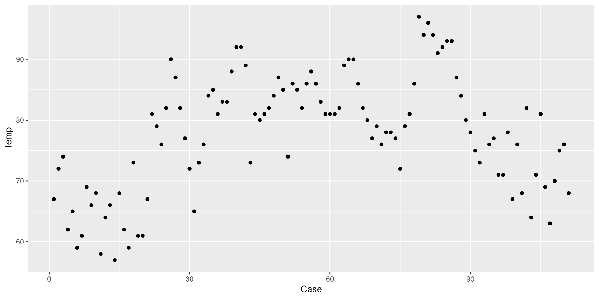
Change the Theme
I personally find GGplot2’s default theme a bit ugly. Luckily there are much nicer alternatives (see here). I like theme_classic():
Add Linear Regression Line
We can use the geom_smooth() function to draw trend lines. The method = argument can be use to specify the type of trend line. We specify "lm" to choose a linear regression line:
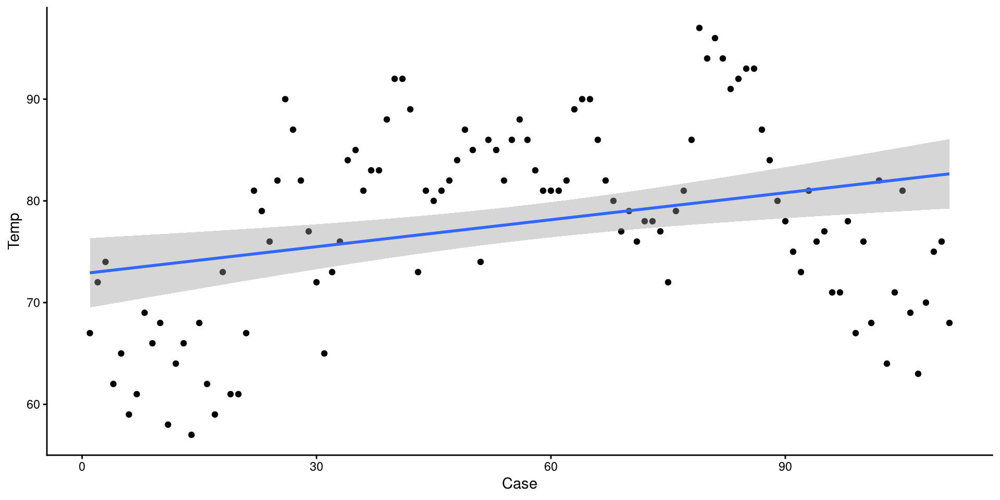
The grey band around the line is the 95% confidence interval. we can add the se = FALSE argument to remove it for nicer looking plots.
Add a Loess Line
method = "loess" can be used to add a loess line.
Loess lines should mostly be used as an exploratory tool to detect non-linear trends. Because this is temperature across the year, a non-liner trend should be expected.
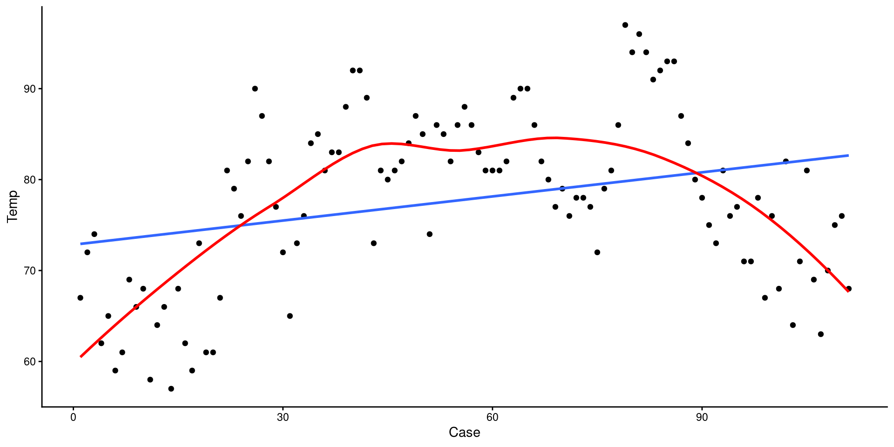
1D Scatterplot 🤔
This is the one-dimensional representation of the Temp variable.
This plot gives a good graphical representation of the variance of a variable. However, for visualizing data, we have better options…
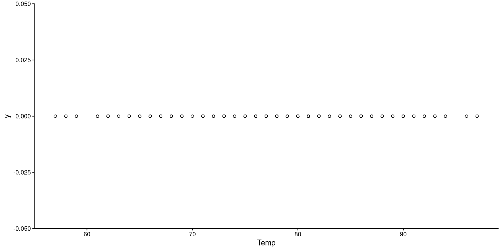
Histograms
Histograms are fairly useful for visualizing distributions of single variables. But you have to choose the number of bins appropriately.
Histogram: Adjusting Bins
Here I just touched up the plot a bit and set the bins to 15. It is much easier to tell what the distribution looks like now.
HEX color codes
The "#3492eb" is actually a color. R supports HEX color codes, which are codes that can represent just about all possible colors. There are many online color pickers (see here for example) that will let you select a color and provide the corresponding HEX color code.
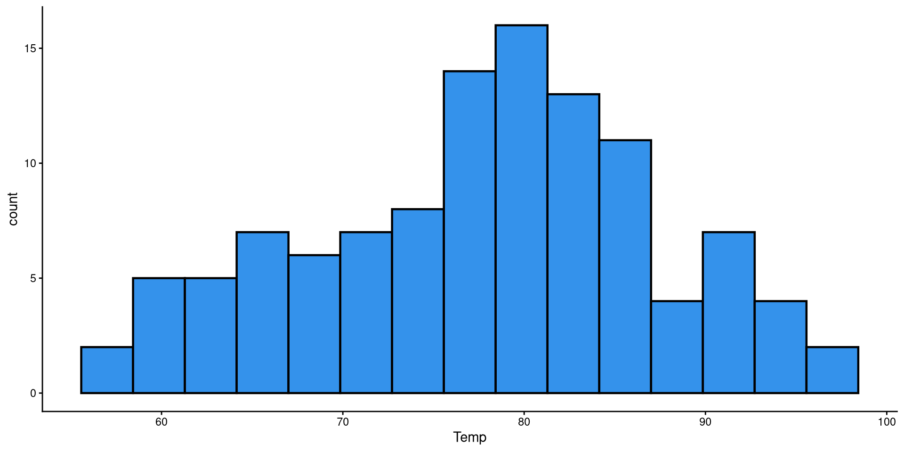
Box-Plots
Box-plots useful to get a sense of the variable’s variance, range, presence of outliers.
Reading a Box-plot
The square represents the interquartile range, meaning that the bottom edge is the \(25^{th}\) percentile of the variable and the top edge is the \(75^{th}\) percentile of the variable. The bolded line is the median of the variable, which is not quite in the middle of the box. This suggests some degree of skew.
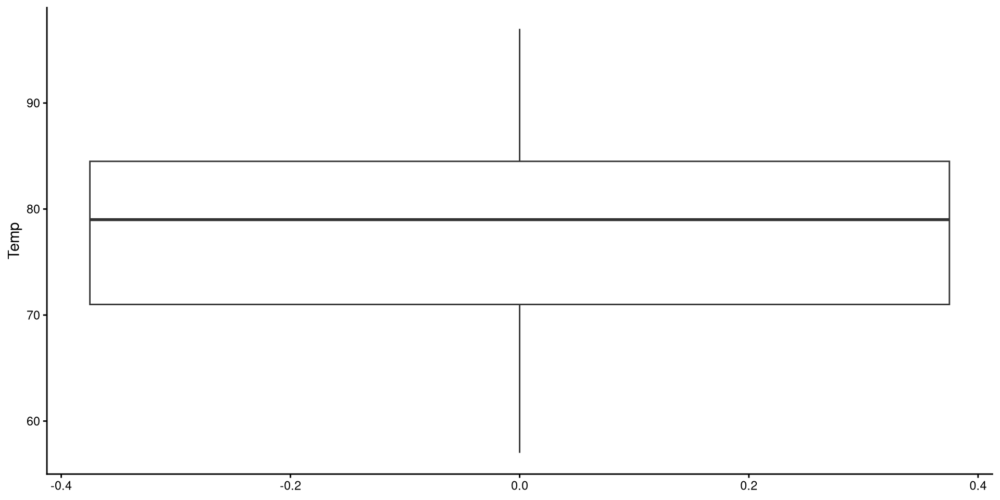
Kernel Density plots
Kernel density plots do a similar job to histograms, but I tend to prefer them over histograms.
The “kernel” is the mathematical function that is used to draw the density. We can change the type of kernel with the kernel = argument. See here at the bottom of the page for other kernel options.
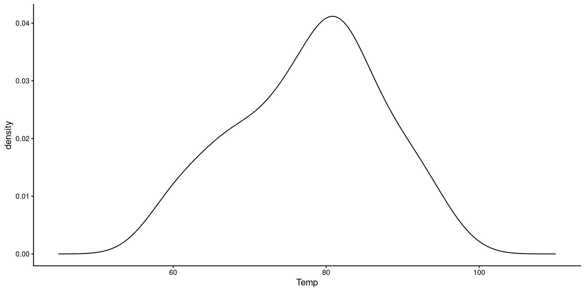
Change Kernel and Smoothing Parameter
Aside from changing the kernel, I also tweak the smoothing parameter (adjust =), which determines how “smooth” the distribution will look.
Generally, R’s default choice of the smoothing parameter is pretty good (here I decreased it). You generally do not want to increase the smoothing parameter too much becuause it will end up hiding irregularities in the distribution.
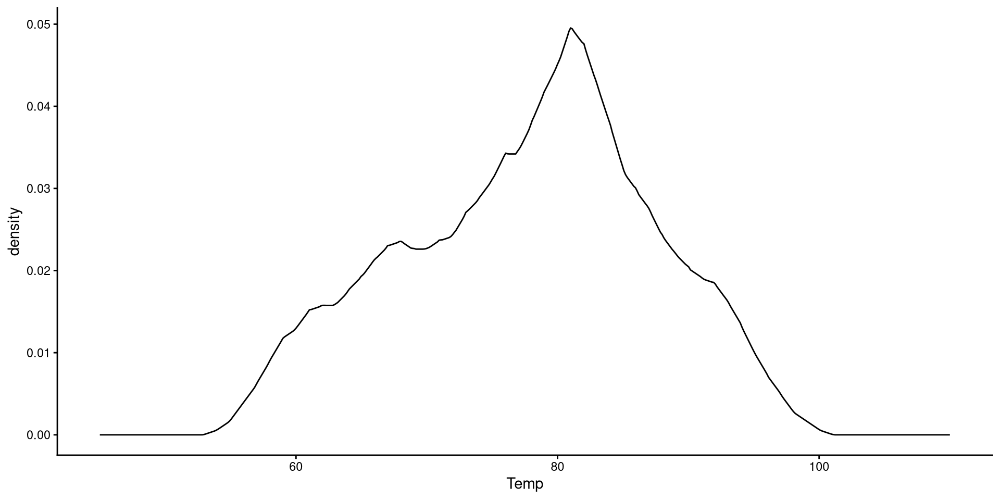
QQplots
QQplots give a graphical representation of how much a variable deviates from normality.
In general, you want the points to be as close as possible to the line. Here I would say that the distribution does not look too non-normal.
See the appendix for an explanation of what are the axes of a QQplot represent.
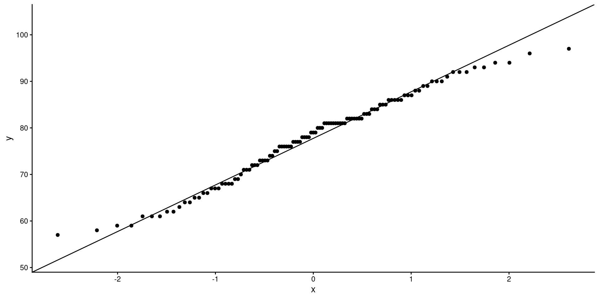
One-Predictor Regression

Our Variables
We will be using wind speed (Wind) to predict temperature (Temp). First let’s take a look at these two variables:
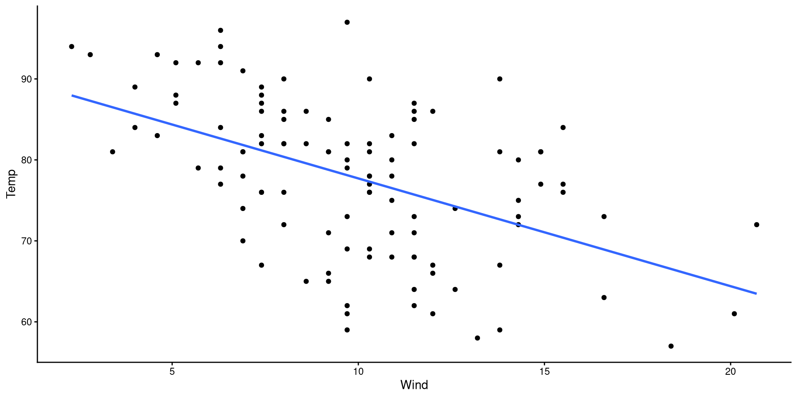
Our goal is to find the mathematical formula that describes the regression line on the plot!
Run a Regression with lm()
The lm() function is what runs ordinary least squares (OLS) regression in R. The function stands for “linear model”!
the general syntax of the lm() function is as follows:
lm(Y ~ X, data = your data)
-
Y: the name of your dependent variable (DV) -
X: the name of your independent variable (IV) -
data = your data: The data that contains your variables
NOTE: if we were to just run lm(Temp ~ Wind), we would get an error. Neither Temp and Wind are objects in our R environment. We need to tell R where to find Temp and Wind by adding data = dat.
What’s inside the lm() output? 🧐
The output of lm() is a list, and we can check the contents of a list with the names() function:
All of these may not make sense now, but hopefully they will in the future. Use this slide for future reference.
-
coefficients: the regression Coefficients (Intercept and slopes) -
residuals: the residuals (true values - predicted value) -
effects: this linear algebra thing (will likely never come up in your life) -
rank: the number of variables in the regression (2 in our case) -
fitted.values: the predicted value of the DV for each row -
assign: the index of the coefficients (not very important)
-
qr: related toeffectsabove. (ignore) -
df.residual: the residuals degrees of freedom -
xlevels: saves the levels offactorvariables if present -
call: the regression formula you specified -
terms: the variables in the model -
model: this is a matrix containing all the data used for the regression
The summary() Function
to get a neat summary of a regression result, we can use the summary() function on an lm object:
Call:
lm(formula = Temp ~ Wind, data = dat)
Residuals:
Min 1Q Median 3Q Max
-19.111 -5.645 1.013 6.255 18.889
Coefficients:
Estimate Std. Error t value Pr(>|t|)
(Intercept) 91.0226 2.3479 38.767 < 2e-16 ***
Wind -1.3311 0.2225 -5.982 2.85e-08 ***
---
Signif. codes: 0 '***' 0.001 '**' 0.01 '*' 0.05 '.' 0.1 ' ' 1
Residual standard error: 8.307 on 109 degrees of freedom
Multiple R-squared: 0.2472, Adjusted R-squared: 0.2402
F-statistic: 35.78 on 1 and 109 DF, p-value: 2.851e-08For the time being, we want to look at the output under coefficients:, which contains our regression equation:
What’s inside summary(lm)? 🧐
Once again, we take a peak at the contents. Some things are the same lm output, while others are new.
-
call: the regression formula you specified -
terms: the variables in the model -
residuals: the residuals (true values - predicted value) -
coefficients: the regression Coefficients (Intercept and slopes), along standard errors and significance tests. -
aliased: Indicates whether any variables are perfectly correlated (you will get a warning if this happens)
-
sigma: the residual standard error, \(\epsilon\) -
df: residuals and regression degrees of freedom -
r.squared: variance explained, AKA \(R^2\) -
adj.r.squared: adjusted \(R^2\) -
fstatistic: the regression \(F\)-statistic -
cov.unscaled: covariance of regression parameters (unlikely to come up in your future)
Although printing the summary shows most of these elements, sometimes you need to extract them individually, so it is good to know where to find them.
Interpreting Regression Coefficients
We found that the regression equation for Wind predicting Temp is; let’s interpret the result.
Call:
lm(formula = Temp ~ Wind, data = dat)
Residuals:
Min 1Q Median 3Q Max
-19.111 -5.645 1.013 6.255 18.889
Coefficients:
Estimate Std. Error t value Pr(>|t|)
(Intercept) 91.0226 2.3479 38.767 < 2e-16 ***
Wind -1.3311 0.2225 -5.982 2.85e-08 ***
---
Signif. codes: 0 '***' 0.001 '**' 0.01 '*' 0.05 '.' 0.1 ' ' 1
Residual standard error: 8.307 on 109 degrees of freedom
Multiple R-squared: 0.2472, Adjusted R-squared: 0.2402
F-statistic: 35.78 on 1 and 109 DF, p-value: 2.851e-08-
\(\beta_0 = 91.02\): The intercept; this is the expected value of
TempwhenWind= 0. In other words, when there is no wind in NY, we expect a temperature of \(91.02\) degrees Fahrenheit. -
\(\beta_1 = -1.33\): The slope; this means that for each 1-unit increase in
Wind, we expectTempto decrease by \(1.33\) degrees Fahrenheit.
Making Predictions
For many reasons, once we have a regression, we may want to predict values of \(Y\) based on some values of \(X\).
From the previous slide, we know that \(\hat{Y} = 91.02 - 1.33 \times X\). So, to find values of \(\hat{Y}\) we plug in some values of \(X\).
- If \(X = 13\), then \(\hat{Y} = 91.02 - 1.33 \times 13 = 73.71\)
- If \(X = 17\), then \(\hat{Y} = 91.02 - 1.33 \times 17 = 68.39\)
Plot Code
ggplot(dat,
aes(x = Wind, y = Temp)) +
geom_point(alpha = 0.5, shape = 1) +
geom_smooth(method = "lm",
se = FALSE) +
geom_segment(x = 13,
xend = 13,
y = 0,
yend = coef(reg)[1] + coef(reg)[2]*13,
linetype = 2) +
geom_segment(x = 0,
xend = 13,
y = coef(reg)[1] + coef(reg)[2]*13,
yend = coef(reg)[1] + coef(reg)[2]*13,
linetype = 2) +
geom_segment(x = 17,
xend = 17,
y = 0,
yend = coef(reg)[1] + coef(reg)[2]*17,
linetype = 2) +
geom_segment(x = 0,
xend = 17,
y = coef(reg)[1] + coef(reg)[2]*17,
yend = coef(reg)[1] + coef(reg)[2]*17,
linetype = 2) 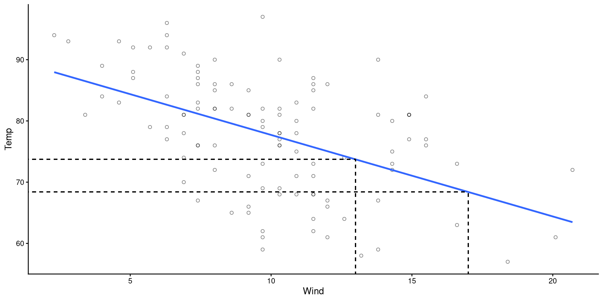
Making Predictions The “right way”
Whenever you are doing calculations in R, you should never copy and paste output numbers because there may be rounding error (and your code will not be generalizable!).
For any
lm() object, the $coef element will contain the exact coefficient values (intercepts and slopes in order of predictor):
So, the appropriate way of calculating the predicted value of \(Y\) if \(X = 13\) is:
Usually, you need predictions for some new data, so you would use the
predict() function. The predict function requires that you input data that has the exact same structure as the original data, but without the \(Y\) variable.
Here I save the predictions as a new variable. Look at the
pred_dat object after running the code below:
Visualizing Predictions
- The black circles are the observed data points.
- The red dots are the predicted values for our data points.
(although it may be obvious to most, the predictions always fall on the regression line)
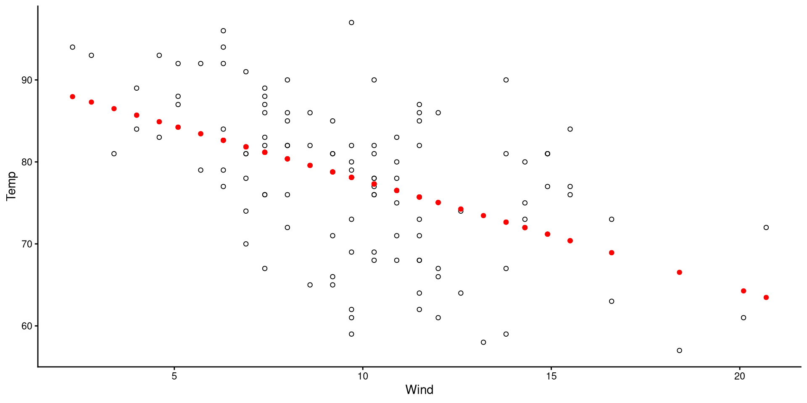
Visualizing Residuals
The length of the dashed lines are the residuals, which represent the difference between observed values (black circles) and predicted values (red dots)
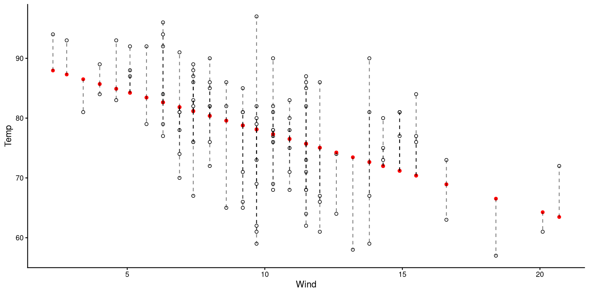
A datapoint with a large residual implies that the regression does a particularly bad job at predicting that datapoint.
Normality of Residuals
The fact that residuals must be normally distributed is the main regression assumption. QQplots can help us infer how much residuals deviate from normality.
As long as roughly 95% of the residuals (dots) are within the band, there should be no cause for concern.
NOTE: since the shaded area represents a 95% confidence interval, seeing roughly 5% of the residuals outside would be within our expectations.
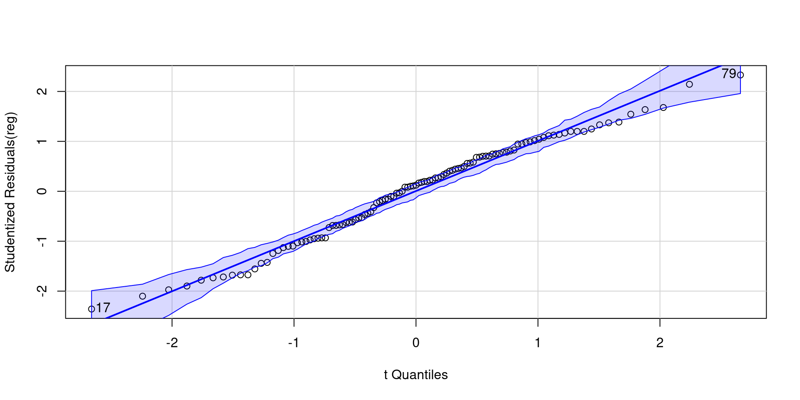
[1] 17 79Plotting Residuals Against Predictors
Equivalently, we can also check that the residuals are evenly distributed around 0 and there are no non-linear trends.
The points look reasonably distributed around the 0 line to me. I would not give the loess line too much weight here.
Note that this is the regrerssion plot tilted such that the regression line is perfectrly horizontal.
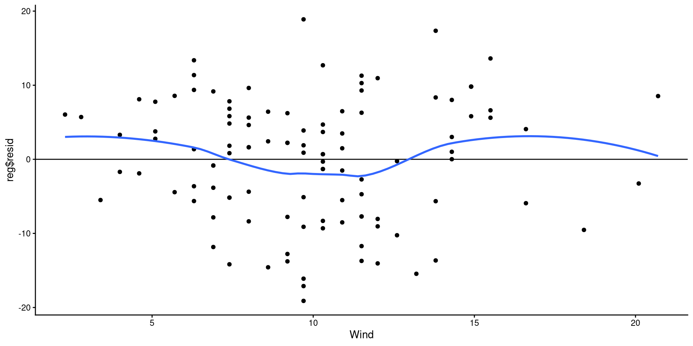
References
Fox, J., Weisberg, S., Price, B., Adler, D., Bates, D., Baud-Bovy, G., Bolker, B., Ellison, S., Firth, D., Friendly, M., Gorjanc, G., Graves, S., Heiberger, R., Krivitsky, P., Laboissiere, R., Maechler, M., Monette, G., Murdoch, D., Nilsson, H., … R-Core. (2024). Car: Companion to Applied Regression.
Revelle, W. (2024). psychTools: Tools to Accompany the ’psych’ Package for Psychological Research.
Wickham, H., Chang, W., Henry, L., Pedersen, T. L., Takahashi, K., Wilke, C., Woo, K., Yutani, H., Dunnington, D., Brand, T. van den, Posit, & PBC. (2024). Ggplot2: Create Elegant Data Visualisations Using the Grammar of Graphics.
Wickham, H., & RStudio. (2023). Tidyverse: Easily Install and Load the ’Tidyverse’.
Appendix
What is a QQplot?

Understanding QQplots
QQplots use the idea of quantiles (both Qs stand for “quantile”). You are probably more familiar with percentiles, which are the exact same as quantiles, save for their units (e.g., the \(.5\) quantile is the same as the \(50^{th}\) percentile). If it makes it easier, whenever you see quantile, just think of it as percentile.
What do the x-axis and the y-axis represent in a QQplot?
- x-axis: Values corresponding to quantiles of a perfectly normal distribution.
d, p, q, r?
Any probability distribution in R has a d, p, q, and r variant. We just used the q variant of the normal distribution, qnorm() (see here for all base R distribution functions). d calculates the density (i.e., height) of a probability distribution for a given \(x\) value, p gives the quantile corresponding to a value (e.g., pnorm(0) gives 0.5), q gives the value corresponding to a quantile (e.g., qnorm(0.5) gives 0), and r generates random values from a distribution.
Creating QQplot Data
So, what now? Well, on the left, we only calculated the coordinates for 3 of the dots on the QQplot. Normally, QQplots do it for all 99 quantiles (\(1^{st}\) percentile to \(99^{th}\) percentile). Let’s walk through the process:
num [1:99] 0.01 0.02 0.03 0.04 0.05 0.06 0.07 0.08 0.09 0.1 ...# calculate quantiles for normal distribution and real data
Xaxis <- qnorm(quantiles)
Yaxis <- quantile(dat$Temp, quantiles)
# Note that you can use ANY mean and SD value for the qnorm() function.
# Here, I use the mean and SD of the Temp variable
Xaxis_2 <- qnorm(quantiles, mean = mean(dat$Temp), sd = sd(dat$Temp))
# create a data.frame (ggplot like data.frame objects)
QQdata <- data.frame("Xaxis" = Xaxis,
"Xaxis_2" = Xaxis_2,
"Yaxis" = Yaxis)
head(QQdata) Xaxis Xaxis_2 Yaxis
1% -2.326348 55.62277 58.1
2% -2.053749 58.22063 59.0
3% -1.880794 59.86889 59.6
4% -1.750686 61.10881 61.0
5% -1.644854 62.11739 61.0
6% -1.554774 62.97585 61.6QQplot The Data
If the explanation before made no sense, here’s a recreated QQplots to convince you (hopefully?)
A more intuitive “QQplot”?
Really, what a QQplot does is tell you how much your observed data (Y-axis) match/mismatch a perfectly normal distribution (X-axis). The same exact information can be conveyed in a possibly more intuitive way…
You should be able to see that the observed data deviating from the normal distribution in the plot on the right is mirrored exactly by the dots deviating form the line in the plot on the left 🧐
Lab 1: Descriptive Techniques and One-Predictor Regression